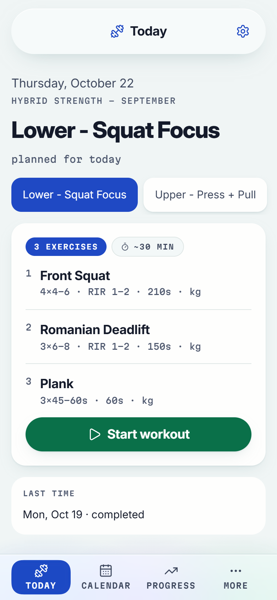
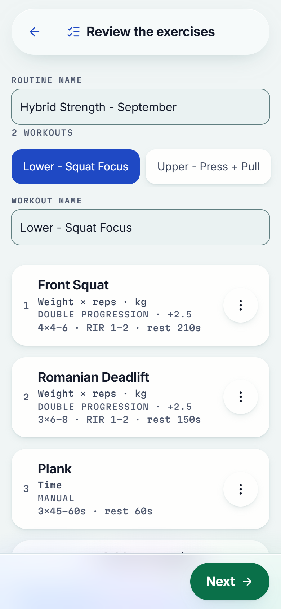
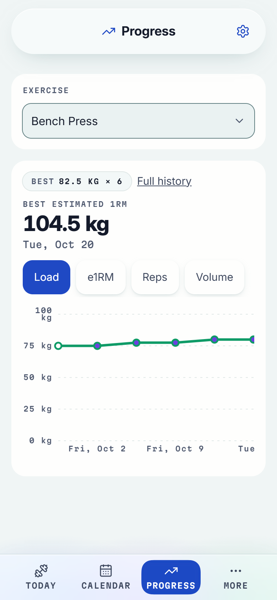
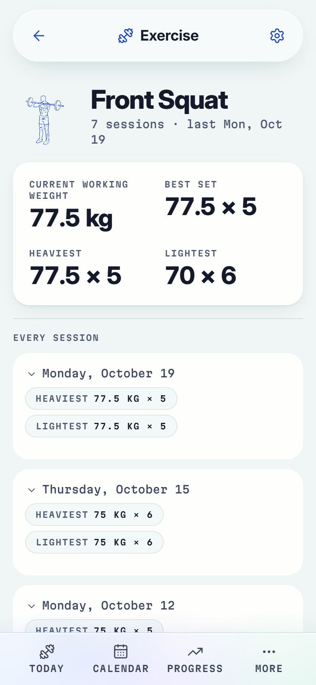

TrainLog
An offline-first training PWA. You write your programme as a YAML file; the app runs it in the gym, records what you actually did, and works out your next load from that record.
- Area
- 01 Full-stack & Product
- Built for
- A phone, in a gym, with unreliable signal. No account, no server.
- Stack
- React, TypeScript, PWA
- Rigor
- Mutation testing, architecture decision records
Source
Live demo · URL pending



